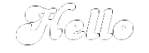

- Index
-
 ImageMagick Examples Preface and Index
ImageMagick Examples Preface and Index
-
Known and Fixed Bugs Index
This is a demonstration of a 'resize halo bug' generated
by the resize filter when doing small resizes of very light
colored images on a transparent background. This bug was
completely fixed, by user demand with the release of
ImageMagick version 6.2.4. This page is for reference for older
IM users who may still have to deal with this bug. The examples
on this page have not been re-created when/if the bug was
fixed.
Resize Halo Bug
We have a white text on a transparent
background. Everything works fine.
convert -background none -fill white -pointsize 72 -font Candice \
label:Hello label.png
|
But resizing it slightly produces a slightly darker edge,
though this is not easily seen on the darker background of this
page.
convert -background none -fill white -pointsize 72 -font Candice \
label:Hello -resize 95% resized.png
|
To see the halo clearly lets overlay the white text image
on a white background, then normalize to show the darker
pixels.
convert -background none -fill white -pointsize 72 -font Candice \
label:Hello -resize 95% \
-background white -flatten -normalize resize_halo.jpg
|

We can see that this really is a resize bug by removing
the resize command and overlaying, producing the expected pure
white image. A pure white image should have been the result of
the previous command.
convert -background none -fill white -pointsize 72 -font Candice \
label:Hello \
-background white -flatten -normalize no_resize.jpg
|
Non-Graphical Test for the Bug
Lets look at this in a
different way.... Running the command...
convert -background none -fill white -pointsize 72 -font Candice \
label:Hello txt:- |\
egrep -v '\) (white|none|#FFFFFFFFFFFF)'
|
The '
egrep' will filter out any pixels in
the "
txt:" output that are fully-transparent black
or white, semi-transparent white or fully-opaque white pixels.
This basically leave the "
txt:" comment header and
any semi-transparent grey or black pixels, which form the halo.
In the above case their are no semi-transparent grey or black
pixels, so only the single line command header is generated.
However if we now resize the image slightly before outputing
the "
txt:" image file...
convert -background none -fill white -pointsize 72 -font Candice \
label:Hello -resize 95% txt:- |\
egrep -v '\) (white|none|#FFFFFFFFFFFF)'
|
You will now see lots, and lots, and lots, of
semi-transparent grey pixels, which should NOT have been
generated!!!! These pixels represent the 'black halo' around
the resized image.
A Work Around
The problem in the above is caused by the
resize filters
not understanding that full-transparent colors should not be
used in the final color of a pixel, only the transparency. This
problem is the same problem involving blurs with transparency,
and discussed in
Blur
Transparency Bug, and similar solutions to this problem
also works here. One workaround that works on both problems, is
to set the color of the transparency to the same as the edge
color of the image being resized. That is use a
fully-transparent white (EG: '
#FFFF' as the
background instead of fully transparent black (EG:
'
none').
convert -background '#FFFF' -fill white -pointsize 72 -font Candice \
label:Hello -resize 95% resized_white.png
|
For resize you can also try turn off the resize filters
by using a '
point' resize filter.
convert -background none -fill white -pointsize 72 -font Candice \
label:Hello -filter point -resize 95% resized_point.png
|
And this works reasonably well for resizing small
amounts, but falls down when heavily resizing images.
convert -background none -fill white -pointsize 1200 -font Candice \
label:Hello -filter point -resize 5% resized_point_big.png
|
If you look closely at the result you can see that the
image while not having a resize halo effect, also effectively
has no anti-aliasing along the edges, (that is, it has the
'jaggies'). Also on more detailed images the internal details
of the resized image can be very bad indeed. Even as small
resizes can produce a moire pattern across an image. Overlaying
any of these examples on a white background (using -flatten for
example) and -normalizing will show no 'halo' effect.
{kind=link}
{kind=link}
{kind=link}
{kind=link}
{kind=link}
{kind=link}
{kind=link}